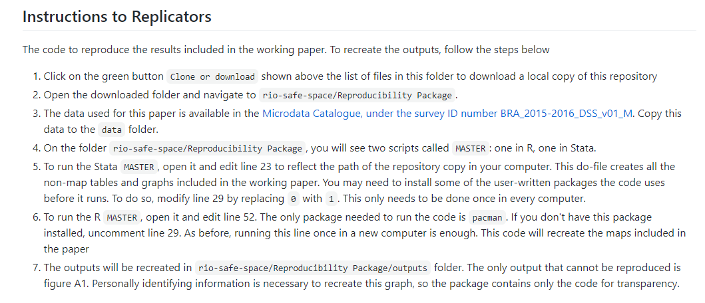

Chapter 1 Conducting reproducible, transparent, and credible research
Policy decisions are made every day using the results of development research, and these decisions have wide-reaching effects on the lives of millions. As the emphasis on evidence-informed policy grows, so too does the scrutiny placed on research methods and results. Three major components make up this scrutiny: credibility, transparency, and reproducibility. These three components contribute to one simple idea: research should be high quality and well documented. Research consumers, including policy makers who use the evidence to make decisions, should be able to examine and recreate it easily. In this framework, it is useful to think of research as a public service that requires researchers as a group to be accountable for their methods. Accountability means acting collectively to protect the credibility of development research by following modern practices for research planning and documentation.
Across the social sciences, the open science movement has been fueled by concerns regarding the proliferation of low-quality research practices; data and code that are inaccessible to the public; analytical errors in major research papers; and, in some cases, even outright fraud. Although the development research community has not yet experienced major scandals, improvements clearly are needed in how code and data are handled as part of research. Moreover, having common standards and practices for creating and sharing materials, code, and data with others will improve the value of the work that researchers do.
This chapter outlines principles and practices that help research consumers to have confidence in the conclusions reached. Each of the three components—credibility, transparency, and reproducibility—is discussed in turn. The first section covers research credibility. It presents three popular methods of committing to the use of particular research questions or methods and avoiding potential criticisms of cherry-picking results: study registration, preanalysis plans, and registered reports. The second section discusses how to apply principles of transparency to all research processes, which allows research teams to be more efficient and research consumers to understand thoroughly and evaluate the quality of research. The final section provides guidance on how to make research fully reproducible and explains why replication materials are an important research contribution in their own right. Box 1.1 summarizes the main points, lists the responsibilities of different members of the research team, and supplies a list of key tools and resources for implementing the recommended practices.
BOX 1.1 SUMMARY: CONDUCTING REPRODUCIBLE, TRANSPARENT, AND CREDIBLE RESEARCH
Credibility, transparency, and reproducibility are three pillars of a high-quality empirical research project. The steps and outputs discussed in this chapter should be prepared at the beginning of a project and revisited through the publication process.
- Credibility. To enhance credibility, researchers need to make as many research decisions as possible before beginning data work. These decisions can be precommitted publicly through the following mechanisms:
- Register research studies to provide a record of every project, so that all evidence about a topic can be maintained; preregister studies to protect design choices from later criticism.
- Write preanalysis plans both to strengthen the conclusions drawn from those analyses and to increase efficiency by creating a road map for project data work.
- Publish a registered report to combine the benefits of the first two steps with a formal peer review process and conditional acceptance of the results of the specified research.
- Transparency. All data acquisition and analysis decisions made during the project life cycle should be documented, including details on what information will be released publicly and a plan for how it will be published:
- Develop and publish comprehensive project documentation, especially instruments for data collection or acquisition that may be needed to prove ownership rights and facilitate the reuse of data.
- Retain the original data in an unaltered form and archive data appropriately, in preparation for de-identification and publication at the appropriate times.
- Write all data-processing and analysis code with public release in mind.
- Reproducibility. Analytical work needs to be prepared so that it can be verified and reproduced by others. To do so, the research team should do the following:
- Understand what archives and repositories are appropriate for various materials.
- Prepare for legal documentation and licensing of data, code, and research products.
- Initiate reproducible workflows that will transfer easily within and outside of the research team, and provide the necessary documentation for others to understand and use all materials.
Key responsibilities for task team leaders and principal investigators
- Develop and document the research design and the corresponding data required to execute it.
- Guide the research team in structuring and completing project registration.
- Understand the team’s future rights and responsibilities regarding data, code, and research publication.
- Determine what methods of precommitment are appropriate, and lead the team in preparing them.
Key responsibilities for research assistants
- Adjust outputs and documentation to meet the specific technical requirements of registries, funders, publishers, or other governing bodies.
- Inform the team leadership whenever methodologies, data strategies, or planned executions are not sufficiently clear or not appropriately documented or communicated.
- Become familiar with best practices for carrying out reproducible and transparent research, and initiate those practices within the research team.
Key Resources
- Registering a research study at https://dimewiki.worldbank.org/Study_Registration
- Creating a preanalysis plan at https://dimewiki.worldbank.org/Preanalysis_Plan
- Preparing to document research decisions at https://dimewiki.worldbank.org/Data_Documentation
- Publishing data in a trusted repository at https://dimewiki.worldbank.org/Publishing_Data
- Preparing and publishing a reproducibility package at https://dimewiki.worldbank.org/Reproducible_Research
Developing a credible research project
The evidentiary value of research is traditionally a function of research design1 choices, such as sampling2, randomization3, and robustness to alternative specifications and definitions (Angrist and Pischke (2010); Ioannidis (2005)). A frequent target for critics of research is the fact that researchers often have a lot of leeway in choosing projects or in selecting results or outcomes after they have implemented projects or collected data in the field (Ioannidis, Stanley, and Doucouliagos (2017)). Such leeway increases the likelihood of finding “false positive” results that are not true outside of carefully selected data (Simmons, Nelson, and Simonsohn (2011)). Credible methods of research design are key to maintaining credibility in these choices and avoiding serious errors. They are especially relevant for research that relies on original data sources, from innovative big data sources to unique surveys. Development researchers should take these concerns seriously. Such flexibility can be a significant issue for the quality of evidence overall, particularly if researchers believe that certain types of results are substantially better for their careers or their publication chances.
This section presents three popular methods of committing to particular research questions or methods and avoiding potential criticisms of cherry-picking results for publication: registration, preanalysis plans, and registered reports. Each method involves documenting specific components of research design, ideally before analyzing or extensively exploring the data. Study registration provides formal notice that a study is being attempted and creates a hub for materials and updates about the study results. Preanalysis plans constitute a more formal commitment to use specific methods on particular questions. Writing and releasing a preanalysis plan in advance of working with data help to protect the credibility of approaches that have a high likelihood of producing false results (Wicherts et al. (2016)). Finally, registered reports allow researchers to approach research design as a process subject to full peer review. Registered reports enable close scrutiny of a research design, provide an opportunity for feedback and improvement, and often result in a commitment to publish based on the credibility of the design rather than on the specific results.
Registering research
Registration of research studies is an increasingly common practice, and more journals are beginning to require registration of the studies they publish (Vilhuber, Turrito, and Welch (2020)). Study registration4 is intended to ensure that a complete record of research inquiry is readily available. Registering research ensures that future scholars can quickly discover what work has been carried out on a given question, even if some or all of the work done is never formally published. Registration can be done before, during, or after a study is completed, providing essential information about its purpose. Some currently popular registries are operated by the American Economic Association (AEA; at https://www.socialscienceregistry.org), the International Initiative for Impact Evaluation (3ie; at https://ridie.3ieimpact.org), Evidence in Governance and Politics (EGAP; at https://egap.org/content/registration), and the Open Science Framework (OSF; at https://osf.io/registries). Each registry has a different target audience and different features, so researchers can select one that is appropriate to their work. Study registration should be feasible for all projects, because registries are typically free to access and initial registration can be submitted with minimal information. A generally accepted practice is to revise and expand the level of detail gradually over time, adding more information to the registry as the project progresses.
Preregistration of studies before they begin is an extension of this principle (Nosek et al. (2018)). Registration of a study before implementation or data acquisition starts provides a simple and low-effort way for researchers to demonstrate that a particular line of inquiry was not generated by the process of data collection or analysis itself, particularly when specific hypotheses are included in the registration. Preregistrations need not provide exhaustive details about how a particular hypothesis will be approached, only that it will be. Preregistering individual elements of research design or analysis can further strengthen the credibility of the research and requires only a minor investment of time or administrative effort. For this reason, DIME requires all studies to be preregistered in a public database and to specify at least some primary hypotheses before providing funding for impact evaluation research. See box 1.2 for a description of how the Demand for Safe Spaces project was registered.
BOX 1.2 REGISTERING STUDIES: A CASE STUDY FROM THE DEMAND FOR SAFE SPACES PROJECT
The experimental component of the Demand for Safe Spaces study was registered at the Registry for International Development Impact Evaluations (RIDIE) under identifier 5a125fecae423. The following are highlights from the registration:
- Evaluation method. Both a primary evaluation method (randomized control trial) and additional methods (difference-in-differences and fixed effects regressions) were included.
- Key outcome variables. Key variables were take-up of rides in women-only car (binary), occurrence of harassment or crime during ride (binary), self-reported well-being after each ride, overall subjective well-being, and implicit association test D-score.
- Primary hypotheses to be tested. Riding in the women-only car reduces harassment experienced by women; riding in the women-only car improves psychological well-being; women are willing to forgo income to ride in the women-only car.
- Secondary research question and methods. Supplementary research methods (implicit association test and platform survey) were used to examine an additional hypothesis: the women-only car is associated with a social norm that assigns responsibility to women for avoiding harassment.
- Sample size for each study arm. The registration indicates the number of individual participants, number of baseline rides, number of rides during the price experiment, number of car-assigned rides, and number of expected participants in the implicit association test.
- Data sources. The study relied on data previously collected (through the mobile app) and data to be collected (through platform surveys and implicit association tests).
- Registration status. The project was categorized as a nonprospective entry, because the crowdsourced data had already been received and processed. The team sought to ensure the credibility of additional data collection and secondary research questions by registering the study.
For the project’s registration on RIDIE, see https://ridie.3ieimpact.org/index.php?r=search/detailView&id=588.
Writing preanalysis plans
If a research team has a large amount of flexibility to define how it will approach a particular hypothesis, study registration may not be sufficient to avoid the criticism of “hypothesizing after the results are known,” also known as HARKing (Kerr (1998)). Examples of such flexibility include a broad range of concrete measures that could each be argued to measure an abstract concept, choices about sample inclusion or exclusion, or decisions about how to construct derived indicators (Huntington-Klein et al. 2021). When researchers are collecting a large amount of information and have leverage over even a moderate number of these options, it is often possible to obtain almost any desired result (Gelman and Loken (2013)).
A preanalysis plan5 (PAP) can be used to assuage these concerns by specifying in advance a set of analyses that the researchers intend to conduct. The PAP should be written up in detail for areas that are known to provide a large amount of leeway for researchers to make decisions later, particularly for areas such as interaction effects or subgroup analysis (for an example, see Cusolito, Dautovic, and McKenzie (2018)). PAPs should not, however, be viewed as binding the researcher’s hands (Olken (2015)). Depending on what is known about the study at the time of writing, PAPs can vary widely in the amount of detail they include (McKenzie and Özler 2020). Various templates and checklists provide details of what information to include (for a recommended checklist, see McKenzie (2012)). See box 1.3 for an example of how to prepare a PAP.
BOX 1.3 WRITING PREANALYSIS PLANS: A CASE STUDY FROM THE DEMAND FOR SAFE SPACES PROJECT
Although the Demand for Safe Spaces study did not publish a formal preanalysis plan, it did publish a concept note in 2015, which included much of the same information as a typical preanalysis plan. Prepared before fieldwork began, the note was subject to review and approval within the World Bank and from a technical committee, including blinded feedback from external academics. The concept note was updated in May 2017 to include new secondary research questions. The concept note specified the planned study along the following dimensions:
- Theory of change, including the main elements of the intervention and the hypothesized causal chain from inputs, through activities and outputs, to outcomes
- Hypotheses derived from the theory of change
- Main evaluation question(s) to be addressed by the study
- List of main outcomes of interest, including name, definition, and level of measurement of each of the outcome variables
- Evaluation design, including a precise description of the identification strategy for each research question and a description of the treatment and control groups
- Sampling strategy and sample size calculation, detailing the assumptions made
- Description of all quantitative data collection instruments
- Data processing and analysis, describing the statistical methods to be used, the exact specification(s) to be run, including clustering of standard errors, key groups for heterogeneity analysis, adjustments for testing multiple hypotheses, and a strategy to test (and correct) for bias
For a version of the study’s concept note, see https://git.io/JYatw.
The core function of a PAP is to describe carefully and explicitly one or more specific data-driven inquiries, because specific formulations are often very hard to justify retrospectively with data or projects that potentially provide many avenues to approach a single theoretical question (for an example, see Bedoya et al. (2019)). Anything outside of the original plan is just as interesting and valuable as it would have been if the plan had never been published, but having precommitted to the details of a particular inquiry makes its results immune to a wide range of criticisms of specification searching or multiple testing (Duflo et al. (2020)).
Publishing registered reports
A registered report6 takes the process of prespecifying a complex research design to the level of a formal publication. In a registered report, a journal or other publisher will peer review and conditionally accept a specific study for publication, typically guaranteeing the acceptance of a later publication that carries out the analysis described in the registered report. Although far stricter and more complex to carry out than ordinary study registration or preanalysis planning, the registered report has the added benefit of encouraging peer review and expert feedback on the design and structure of the proposed study (Foster, Karlan, and Miguel 2018). Registered reports are never required, but they are designed to reward researchers who are able to provide a large amount of advance detail for their project, want to secure publication interest regardless of results, or want to use methods that may be novel or unusual.
Registered reports are meant to combat the “file-drawer problem” and ensure that researchers are transparent in the sense that all of the promised results obtained from registered-report studies are actually published (Simonsohn, Nelson, and Simmons (2014)). This approach has the advantage of specifying in detail the project’s complete research and analytical design and securing a commitment for publication regardless of the outcome. This may be of special interest for researchers studying events or programs for which there is a substantial risk that they will not be able to publish a null or negative result (for an example, see Coville et al. (2019)) or when they wish to avoid any pressure toward finding a particular result—for example, when the program or event is the subject of substantial social or political pressures. As with preregistration and preanalysis, nothing in a registered report should be understood to prevent a researcher from pursuing additional avenues of inquiry once the study is complete, either in the same or in separate research outputs.
Conducting research transparently
Transparent research exposes not only the code but also also all the research processes involved in developing the analytical approach. Such transparency means that readers can judge for themselves whether the research was done well and the decision-making process was sound. If the research is well structured and all relevant research documentation7 is shared, readers will be able to understand the analysis fully. Researchers who expect the process to be transparent also have an incentive to make better decisions and to be skeptical and thorough about their assumptions. They will also save themselves time, because transparent research methods make coding more efficient and prevent teams from having the same discussion multiple times.
Clearly documenting research work is necessary to allow others to evaluate exactly what data were acquired and how the information was used to obtain a particular result. Many development research projects are designed to address specific questions and often use unique data, novel methods, or small samples. These approaches can yield new insights into essential academic questions, but they need to be documented transparently so they can be reviewed or replicated by others in the future (Duvendack, Palmer-Jones, and Reed (2017)). Unlike disciplines in which data are more standardized or research is more oriented toward secondary data, the exact data used in a development research project often have not been observed by anyone else in the past and may be impossible to collect again in the future.
Regardless of the novelty of study data, transparent documentation methods help to ensure that data were collected and handled appropriately and that studies and interventions were implemented correctly. As with study registrations, project and data documentation should be released on external archival repositories8 so that they can always be accessed and verified.
Documenting data acquisition and analysis
Documenting a project in detail greatly increases transparency. Many disciplines have a tradition of keeping a “lab notebook” (Pain 2019); adapting and expanding this process to create a lab-style workflow in the development field are critical steps toward more transparent practices. Transparency requires explicitly noting decisions as they are made and explaining the process behind the decision-making. Careful documentation also saves the research team a lot of time; it avoids the need to have the same discussion twice (or more!), because a record exists of why something was done in a particular way. Several tools are available for producing documentation, and documenting a project should be an active, ongoing process, not a one-time requirement or retrospective task. New decisions are always being made as the plan becomes a reality, and there is nothing wrong with sensible adaptation so long as it is recorded and disclosed.
Email, however, is not a documentation service, because communications are
rarely well ordered, can be easily deleted, and are not available for future
team members. At the very least, emails and other decision-making communications
need to be archived and preserved in an organized manner so that they can be
easily accessed and read by others in the future. Various software solutions are
available for building proper documentation over time. Some solutions work
better for keeping field records such as implementation decisions, research
design, and survey development; others work better for recording data work and
code development. The Open Science Framework (OSF; https://osf.io) provides
one such solution, with integrated file storage, version histories, and
collaborative wiki pages. GitHub (https://github.com) provides a transparent
documentation system through commit messages, issues, README.md files, and
pull requests, in addition to version histories and wiki pages. Such services
offer multiple ways to record the decision making process leading to changes and
additions, to track and register discussions, and to manage tasks. (For more
details on how to use Git and GitHub and for links to all DIME Analytics
resources on best practices and how to get started, see the DIME Wiki at
https://dimewiki.worldbank.org/Getting_started_with_GitHub.)
These flexible tools can be adapted to different team and project dynamics. Services that log the research process can show modifications made in response to referee comments, by having tagged version histories at each major revision. They also allow the use of issue trackers to document the research paths and questions that the project tried to answer as a resource for others who have similar questions. Each project has specific requirements for managing data, code, and documentation; and the exact transparency tools to use will depend on the team’s needs. In all cases, the tools should be chosen before project launch, and a project’s documentation should begin as soon as decisions are made.
Cataloging and archiving data
Data and data collection methods should be fully cataloged, archived, and documented, whether the data are collected by the project itself or received from an outside partner. In some cases, this process is as simple as uploading a survey instrument or an index of data sets and a codebook to an archive. In other cases, the process is more complex. Proper documentation of data collection often requires a detailed description of the overall sampling procedure (for an example, see Yishay et al. (2016)). Settings with many overlapping strata, treatment arms, excluded observations, or resampling protocols might require extensive additional documentation. This documentation should be continuously updated and kept with the other study materials; it is often necessary to collate these materials for publication in an appendix.
When data are received from partners or collected in the field, the original data9 (including field corrections) should be placed immediately in a secure permanent storage system. Before analytical work begins, it is necessary to create a “for-publication” copy of the acquired data set by removing all personally identifying information. This copy will be the public version of the original data set and must be placed in an archival repository where it can be cited (Vilhuber, Turrito, and Welch (2020)). This type of data depositing or archiving precedes publishing or releasing any data: data at this stage may still need to be embargoed or have other, potentially permanent, access restrictions, so the archive can be instructed formally to release the data later. If the planned analysis requires the use of confidential data, those data should be stored separately (and most likely remain encrypted) so that it is clear what portions of the code will work with and without the restricted-access data.
Some institutions have their own dedicated data repositories, such as the World Bank Microdata Library (https://microdata.worldbank.org) and the World Bank Data Catalog (https://datacatalog.worldbank.org). Some project funders, such as the U.S. Agency for International Development (https://data.usaid.gov), provide specific repositories in which they require the deposit of data they have funded. Researchers should take advantage of these repositories when possible. If no such service is provided, researchers must be aware of privacy issues regarding directly identifying data and questions of data ownership before uploading original data to any third-party server, whether public or not. This is a legal question for the institutions affiliated with the principal investigators. If the data required for analysis must be placed under restricted use or restricted access, including data that can never be distributed directly to third parties, a plan is needed for storing these data separately from publishable data. Making such a plan maximizes transparency by having a clear release package as well as by providing instructions or developing a protocol for allowing access in the future for replicators or reviewers under appropriate access agreements (for details on how to document this type of material, see Vilhuber et al. 2020).
Regardless of restricted-access and confidentiality considerations, the selected data repository should create a record of the data’s existence and provide instructions for how another researcher might obtain access. More information on the steps required to prepare and publish a de-identified data set are presented in chapters 6 and 7. Data publication should create a data citation and a digital object identifier10 (DOI) or some other persistent index that can be used in future work to indicate unambiguously the exact location of the data. The data publication package should also include methodological documentation and complete human-readable codebooks for all of the variables located there.
Analyzing data reproducibly and preparing a reproducibility package
Reproducible research11 makes it easy for others to apply the techniques used in the project to new data or to implement a similar research design in a different context. Development research is moving rapidly in the direction of requiring adherence to specific reproducibility guidelines (Christensen and Miguel (2018)). Major publishers and funders, most notably the American Economic Association, have taken steps to require code and data to be reported accurately, cited, and preserved as research outputs that can be accessed and verified by others. Making research reproducible in this way is a public good. It enables other researchers to reuse code and processes to do their own work more easily and effectively in the future. Regardless of what is formally required, code should be written neatly, with clear instructions. It should be easy to read and understand. The corresponding analysis data also should be made accessible to the greatest legal and ethical extent possible through data publication12.
Common research standards from journals and funders feature both regulation and verification policies (Stodden, Guo, and Ma (2013)). Regulation policies require authors to provide reproducibility packages before publication, which the journal then reviews for completeness. Verification policies require authors to make certain materials available to the public, but their completeness is not a precondition for publication. Other journals provide guidance with checklists for reporting on whether and how various practices were implemented, but do not require any specific practices (Nosek et al. (2015)). Producing these kinds of resources also has the advantage of creating additional opportunities for citations. Even if privacy considerations mean that some or no data or results will be published, these practices are still valuable for project organization.
Regardless of external requirements, it is important to prepare to release all data that can be published. When data cannot be published, it is important to publish as much metadata as allowed, including information on how the data were obtained, what fields the data contain, and aggregations or descriptive statistics. Even if the data cannot be published, code files rarely contain restricted information, so the code should still be made available, with clear instructions for obtaining usable data. Additionally, reproducibility demands should be considered when designing the informed consent protocols or data license agreement for sensitive data. Such efforts could include establishing acceptable conditions (such as a secure transfer or cold room) under which third parties may access data for the purpose of independently reproducing results.
At DIME, all published research outputs are required to satisfy computational reproducibility13. Before releasing a working paper, the research team submits a reproducibility package with de-identified data, and DIME Analytics verifies that the package produces exactly the same results that appear in the paper (Andrade et al. 2019). The team also assesses whether the package includes sufficient documentation. Once the computational reproducibility check is complete, the team receives a completed reproducibility certificate that also lists any publicly available materials to accompany the package, for use as an appendix to the publication. The DIME Analytics team organizes frequent peer reviews of code for works in progress, and the general recommendation is to ensure that projects are always externally reproducible instead of waiting until the final stages to prepare this material. In this way, code is continuously maintained, clearly documented, and easy to read and understand in terms of structure, style, and syntax.
For research to be reproducible, all code files for data cleaning, construction, and analysis should be public, unless they contain confidential information. Nobody should have to guess exactly what a given index comprises, what controls are included in the main regression, or whether standard errors are clustered correctly. That is, as a purely technical matter, nobody should have to “just trust you” or have to work to find out what would happen if any or all of these tasks were done slightly differently (Simonsohn, Simmons, and Nelson (2015)). Letting people play around with a project’s data and code is a great way to have new questions asked and answered on the basis of valuable work already done (Daniels et al. 2019).
A reproducibility package should include the complete materials needed to recreate the final analysis exactly and should be accessible and well documented so that others can identify and adjust potential decision points in which they are interested. They should be able to identify easily what data are used and how the data can be accessed; what code generates each table, figure, and in-text number; how key outcomes are constructed; and how all project results can be reproduced. It is important to plan for reproducibility, because doing so supports the researcher’s ability to obtain the proper documentation and permissions for all data, code, and materials used throughout the project. A well-organized reproducibility package usually takes the form of a complete directory, including documentation and a master script14. When considered in combination with the corresponding publication, this package leads readers through the process and rationale for the code behind each of the outputs. See box 1.4 for an example of a reproducibility package.
BOX 1.4 PREPARING A REPRODUCIBILITY PACKAGE: A CASE STUDY FROM THE DEMAND FOR SAFE SPACES PROJECT
The Demand for Safe Spaces team published all final study materials to a repository on the World Bank GitHub account. The repository holds the abstract of the paper, ungated access to the most recent version of the full paper, an online appendix including robustness checks and supplemental material, and the project’s reproducibility package.
The data for this project are published in the Microdata Catalog, under survey ID number BRA_2015-2016_DSS_v01_M. The Microdata Catalog entry includes metadata on the study, documentation such as survey instruments and technical reports, terms of use for the data, and access to downloadable data files. Both the crowdsourced data and the platform survey data are accessible through the Microdata Catalog.
The “Reproducibility Package” folder on GitHub contains instructions for executing the code. Among other things, it provides licensing information for the materials, software and hardware requirements including time needed to run, and instructions for replicators (which are presented below). Finally, it has a detailed list of the code files that will run, the required data inputs, and the outputs of each process.

For the Demand for Safe Spaces GitHub repository, see https://github.com/worldbank/rio-safe-space.
For the Microdata Catalog entry for the study, see https://microdata.worldbank.org/index.php/catalog/3745.
Looking ahead
With the ongoing rise of empirical research and increased public scrutiny of scientific evidence, making analysis code and data available is necessary but not sufficient to guarantee that findings will be credible. Even if the methods used are highly precise, the evidence is only as good as the data—and plenty of mistakes that would compromise the conclusions can be made between establishing a design and generating final results. For this reason, transparency is key for research credibility. It allows other researchers and research consumers to verify the steps to reach a conclusion by themselves and decide whether their standards for accepting a finding as evidence are met. Every investment made up front in documentation and transparency protects the project down the line, particularly as these standards continue to tighten. With these principles in mind, the approach taken to the development, structure, and documentation of data work in this handbook provides a system for implementing these ideas in everyday work. The next chapter discusses the workspace needed to work in an efficient, organized, secure, and reproducible manner.
Research design is the process of planning a scientific study so that data can be generated, collected, and used to accurately estimate specific parameters in the population of interest. For more details, see the DIME Wiki at https://dimewiki.worldbank.org/Experimental_Methods and https://dimewiki.worldbank.org/Quasi-Experimental_Methods.↩︎
Sampling is the process of selecting units from the population of interest to observe such that statistical properties appropriate to the research design are present in the observed group. For more details, see the DIME Wiki at https://dimewiki.worldbank.org/Sampling.↩︎
Randomization is the process of generating a sequence of unrelated numbers, typically for the purpose of implementing a research design that requires a key element to exhibit zero correlation with all other variables. For more details, see the DIME Wiki at https://dimewiki.worldbank.org/Randomization.↩︎
Study registration is the process of recording the existence, intention, and design of a research study in a third-party database. For more details, see the DIME Wiki at https://dimewiki.worldbank.org/Study_Registration.↩︎
A preanalysis plan (PAP) is a document containing extensive details about a study’s analytical approach, which is archived or published using a third-party repository in advance of data acquisition. For more details, see the DIME Wiki at https://dimewiki.worldbank.org/Preanalysis_Plan.↩︎
A registered report is a manuscript category offered by some publishers; it includes peer review and publication of a research design, often accompanied by a conditional commitment to accept a manuscript detailing the results of the study.↩︎
Research documentation is the collection of all written records and materials needed for a third party to understand and evaluate the design and results of a given study. For more details, see the DIME Wiki at https://dimewiki.worldbank.org/Research_Documentation.↩︎
An archival repository is a third-party service for storing information that guarantees the permanent availability of current and prior versions of materials.↩︎
Original data constitute a new data set, as obtained and corrected, that becomes the functional basis for research work.↩︎
A digital object identifier (DOI) is a permanent reference for electronic information that persistently updates to a URL or other location if the information is moved.↩︎
Reproducible research is the class of research studies for which individuals not involved in the research can examine and recreate the results from the raw study materials by following the research documentation. For more details, see the DIME Wiki at https://dimewiki.worldbank.org/Reproducible_Research. See also pillar 3 of the DIME Research Standards at https://github.com/worldbank/dime-standards.↩︎
Data publication is the process of releasing research data so they can be located, accessed, and cited. For more details, see the DIME Wiki at https://dimewiki.worldbank.org/Publishing_Data. See also pillar 5 of the DIME Research Standards at https:// github.com/worldbank/dime-standards.↩︎
Computational reproducibility is the ability of another individual to reuse the same code and data and obtain the exact same results. For more details, see the DIME Wiki at https://dimewiki.worldbank.org/Reproducible_Research. See also pillar 3 of the DIME Research Standards at https://github.com/worldbank/dime-standards.↩︎
A master script (in Stata, a master do-file) is a single code script that can be used to execute all of the data work for a project, from importing the original data to exporting the final outputs. Any team member should be able to run this script and all the data work scripts executed by it by changing only the directory file path in one line of code in the master script. For more details, see the DIME Wiki at https://dimewiki.worldbank.org/Master_Do-files.↩︎